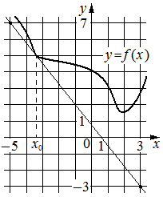

Авторский разбор и аудит предварительны; внешней экспертизы нет.
Модель автора: claude-opus-5-5 (opus; effort=low); в основных частотах: True ·
Впишите правильный ответ.
На рисунке изображены график функции и касательная к нему
в точке с абсциссой . Найдите значение производной функции
в точке .

КЭС: 4.2 Применение производной к исследованию функций на монотонность и экстремумы. Нахождение наибольшего и наименьшего значения функции на отрезке
-1
| ID / вход | Действие | Результат | Локальные KC |
|---|---|---|---|
| s1 · condition | Считать по рисунку две точки касательной с целыми координатами в узлах сетки | Касательная проходит через (-4; 4) и (3; -3) | kc1 |
| s2 · s1 | Вычислить угловой коэффициент касательной по двум точкам | k = (-3 - 4)/(3 - (-4)) = -1 | kc2 |
| s3 · s2, condition | Применить геометрический смысл производной: f'(x0) равна угловому коэффициенту касательной в точке x0 | f'(x0) = -1 | kc3 |
[
{
"id": "m1",
"name": "Производная через угловой коэффициент касательной по двум узлам сетки",
"step_ids": [
"s1",
"s2",
"s3"
]
}
]По изображению прямой на координатной сетке найти точки, лежащие на ней в узлах сетки, и записать их координаты; применимо, когда узлы читаются однозначно.
{
"local_kc_id": "kc1",
"status": "uncertain",
"catalog_kc_id": null,
"evidence": [
{
"ref": "step:s1:action",
"quote": "Считать по рисунку две точки касательной с целыми координатами в узлах сетки"
},
{
"ref": "step:s1:result",
"quote": "Касательная проходит через (-4; 4) и (3; -3)"
},
{
"ref": "image:assets/bb7e330f2fccfc8da3bb2624.png",
"region_description": "Прямая-касательная идёт из левого верхнего угла вниз вправо; касается графика y=f(x) в точке над подписью x0 (пунктир к оси, x=-4, y=4) и проходит через узел у нижнего правого края при x=3, y=-3 (подписи осей -5, 0, 1, 3, 7, 1, -3)."
}
],
"context_refs": [
"condition",
"image:assets/bb7e330f2fccfc8da3bb2624.png"
],
"alternatives_checked": [
{
"catalog_kc_id": "graph_coordinates",
"reason": "Близко по операции (считывание координат по масштабу сетки), но определение говорит об отмеченных точках и явно заданных пересечениях с осями; здесь точки не отмечены, а выбраны самим решателем как узлы сетки на прямой. Граница неоднозначна."
}
],
"rationale": "Наблюдаемое действие — выбор и считывание узлов сетки на изображённой прямой. Считанные значения согласуются с рисунком. Каталожный узел graph_coordinates покрывает считывание отмеченных точек; включает ли он самостоятельный поиск узлов на прямой, из определения не следует, поэтому uncertain, а не match.",
"proposal": null,
"blocking": false,
"issue_ids": []
}По координатам двух различных точек невертикальной прямой найти k как отношение приращения ординаты к приращению абсциссы.
{
"local_kc_id": "kc2",
"status": "new_candidate",
"catalog_kc_id": null,
"evidence": [
{
"ref": "step:s2:action",
"quote": "Вычислить угловой коэффициент касательной по двум точкам"
},
{
"ref": "step:s2:result",
"quote": "k = (-3 - 4)/(3 - (-4)) = -1"
}
],
"context_refs": [
"step:s1:result"
],
"alternatives_checked": [
{
"catalog_kc_id": "literal_f253b50b98a1",
"reason": "Требует найти оба коэффициента y=kx+b; в решении найден только k, b не нужен и не вычисляется — это компонент, а не полное действие."
},
{
"catalog_kc_id": "direct_proportion",
"reason": "Для y=kx по одной точке; прямая здесь не проходит через начало координат."
}
],
"rationale": "Операция — отношение приращений ординаты к абсциссе для двух точек невертикальной прямой. Вычисление верно: -7/7=-1. В каталоге нет отдельного узла для углового коэффициента без восстановления b.",
"proposal": {
"name": "Вычислять угловой коэффициент прямой по двум точкам",
"definition": "Для двух точек невертикальной прямой с разными абсциссами найти k=(y2-y1)/(x2-x1); нахождение свободного члена не входит."
},
"blocking": false,
"issue_ids": []
}По угловому коэффициенту касательной к графику функции в точке определить значение производной в этой точке (касательная невертикальна).
{
"local_kc_id": "kc3",
"status": "new_candidate",
"catalog_kc_id": null,
"evidence": [
{
"ref": "step:s3:action",
"quote": "Применить геометрический смысл производной: f'(x0) равна угловому коэффициенту касательной в точке x0"
},
{
"ref": "step:s3:result",
"quote": "f'(x0) = -1"
}
],
"context_refs": [
"condition",
"step:s2:result"
],
"alternatives_checked": [
{
"catalog_kc_id": "literal_9aee0783618d",
"reason": "Считывание знака производной по графику производной, а не значение производной через касательную."
},
{
"catalog_kc_id": "derivative_monotonicity",
"reason": "Вывод о монотонности по знаку производной, другая операция."
},
{
"catalog_kc_id": "stationary_point",
"reason": "Решение f'=0, не связь производной с касательной."
}
],
"rationale": "Действие — отождествление f'(x0) с угловым коэффициентом невертикальной касательной в точке x0. В каталоге узлы производной касаются дифференцирования, знака и экстремумов; геометрического смысла производной нет.",
"proposal": {
"name": "Находить значение производной через угловой коэффициент касательной",
"definition": "Для невертикальной касательной к графику дифференцируемой функции в точке x0 принять f'(x0) равным её угловому коэффициенту; вычисление коэффициента отдельно."
},
"blocking": false,
"issue_ids": []
}[ "Координаты точек касательной считаны с рисунка; (-4;4) и (3;-3) согласуются с подписями осей и сеткой." ]
[]
{
"author_path": "data/annotation/runs/2026-11-07-fipi-team-bogdan108-051-150/raw/author/F25161.json",
"auditor_path": "data/annotation/runs/2026-11-07-fipi-team-bogdan108-051-150/raw/auditor/F25161.json",
"accepted_after_review": null
}